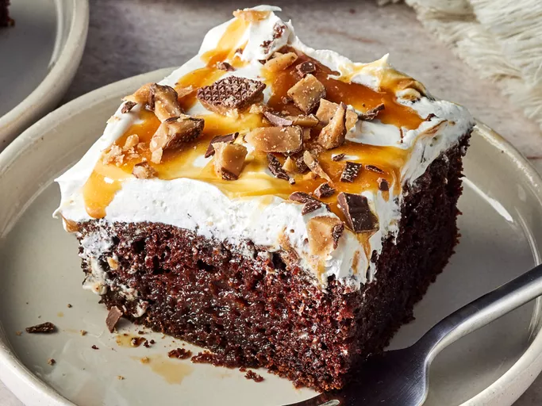

Better Than Sex Cake

Description
A better than sex cake made with rich chocolate cake, caramel, toffee, and whipped topping... Need I say more?
Ingredients
- Cake Mix: This decadent dessert starts with a package of devil’s food cake mix.
- Water and Oil: Water and oil add moisture and keep the cake from drying out.
- Eggs: Three eggs lend more moisture and help bind the cake batter together.
- Sweetened condensed milk: A ½ can of sweetened condensed milk takes things over the top.
- Caramel: Use store-bought caramel ice cream topping or nake your own (store-bought >>>)
- Chocolate-covered toffee: Chocolate-covered toffee bars lend sweetness, crunch, and richness.
- Frozen Whipped Topping: A container of thawed whipped topping is the perfect sweet and fluffy finishing touch.
How To Make Better Than Sex Cake
- Make the cake batter and pour it into the prepared pan.
- Bake the cake until a toothpick comes out clean, then cut slits across the top of the cake.
- Combine the condensed milk and caramel on the stove, then pour over the baked cake.
- Top the cooled cake with the whipped topping. Drizzle with caramel and chill.
Home